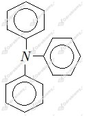
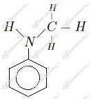
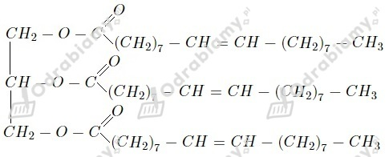
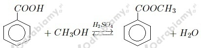
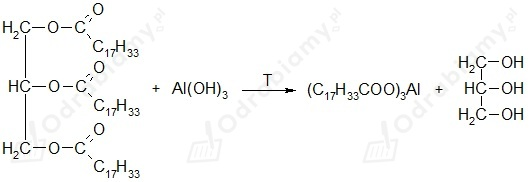

Zdania prawdziwe to: e
wyjaśnienie zdań fałszywych:
a. Kwas węglowy jest słabszy od kwasu etanowego. Udowadnia to np. reakcja skał wapiennych z octem.
b. Najprostszy kwas dikarboksylowy to kwas etanodiowy (szczawiowy).
c. Im dłuższy łańcuch węglowy, tym mniejsza moc kwasu karboksylowego.
d. Aminy aromatyczne rozpuszczają się w wodzie słabiej od amin alifatycznych, ze względu na obecność zdelokalizowanych elektronów w pierścieniu aromatycznym.
f. Do zajścia reakcji estryfikacji niezbędna jest obecność kwasu siarkowego(VI).
Kwasy karboksylowe to:
- CH3CH2CH2CH2COOH - kwas pentanowy
- CH3CH(CH3)COOH - kwas 2-metylopropanowy
- HCOOH - kwas metanowy
a)

b)
c)

d)

a)
b)
c)

d)
Estry są bardziej lotne od alkoholi i kwasów karboksylowych, ponieważ w ich cząsteczkach brak jest atomów, które byłyby zdolne do tworzenia wiązań wodorowych pomiędzy cząsteczkami.
- dimetyloamina - drugorzędowa - rzędowość amin określa się na podstawie ilości grup węglowodorowych połączonych bezpośrednio z atomem azotu;
- propan-2-ol - drugorzędowy - rzędowość alkoholi określa się na podstawie tego, z iloma innymi atomami węgla związany jest bezpośrednio atom węgla, przy którym znajduje się grupa -OH;
Zaczynamy od zapisania równania reakcji:

Stosunek molowy trioleinianu glicerolu do powstającego mydła glinowego wynosi 1:1.
Masa molowa trioleinianu glicerolu wynosi 884 g/mol, zaś masa molowa powstałego mydła glinowego (trioleinianu glinu) to 870 g/mol.
Liczymy masę mydła, jaką otrzymamy ze 100 g trioleinianu glicerolu:
Odpowiedź: W reakcji tej można otrzymać 98,42 g mydła glinowego.
Wzory sumaryczne:
- octan pentylu - C7H14O2 (pochodzi od kwasu etanowego o dwóch atomach węgla w cząsteczce i alkoholu pentylowego o pięciu atomach węgla w cząsteczce)
- maślan pentylu - C9H18O2 (pochodzi od kwasu butanowego o czterech atomach węgla w cząsteczce i alkoholu pentylowego o pięciu atomach węgla w cząsteczce)
- mrówczan pentylu - C6H12O2 (pochodzi od kwasu metanowego o jednym atomie węgla w cząsteczce i alkoholu pentylowego o pięciu atomach węgla w cząsteczce)
- maślan etylu - C6H12O2 (pochodzi od kwasu butanowego o czterech atomach węgla w cząsteczce i alkoholu etylowego o dwóch atomach węgla w cząsteczce)
- octan etylu - C4H8O2 (pochodzi od kwasu etanowego o dwóch atomach węgla w cząsteczce i alkoholu etylowego o dwóch atomach węgla w cząsteczce)
Zawartość procentową węgla liczymy jako stosunek masy węgla w cząsteczce do masy cząsteczkowej:
- octan pentylu:
- maślan pentylu:
- mrówczan pentylu:
- maślan etylu:
- octan etylu:
Odpowiedź: Największą zawartość procentową węgla w cząsteczce ma maślan pentylu.
Równanie reakcji:
Masa molowa wodorotlenku sodu wynosi 40 g/mol, zaś masa molowa metanianu sodu to 68 g/mol.
Odpowiedź: Potrzeba 588,2 kg wodorotlenku sodu.